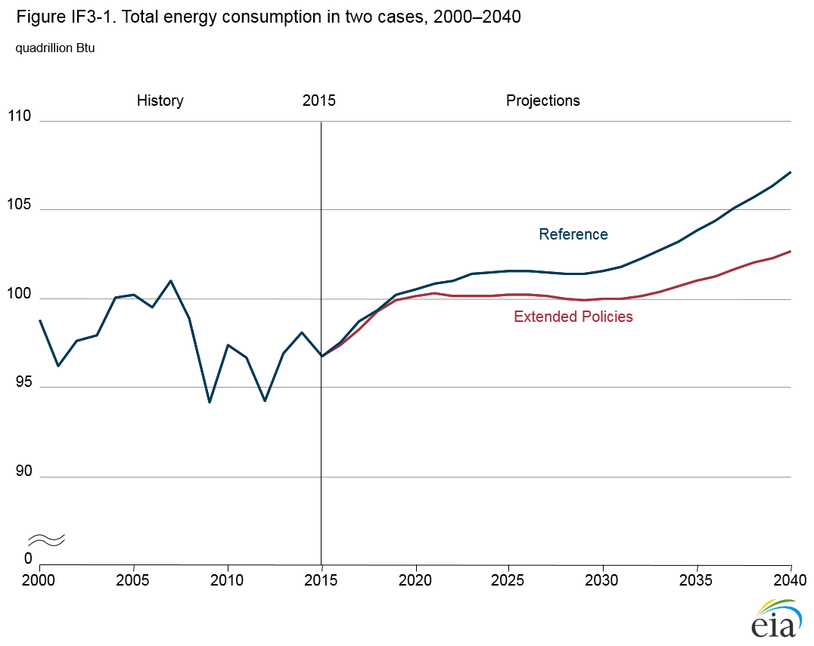
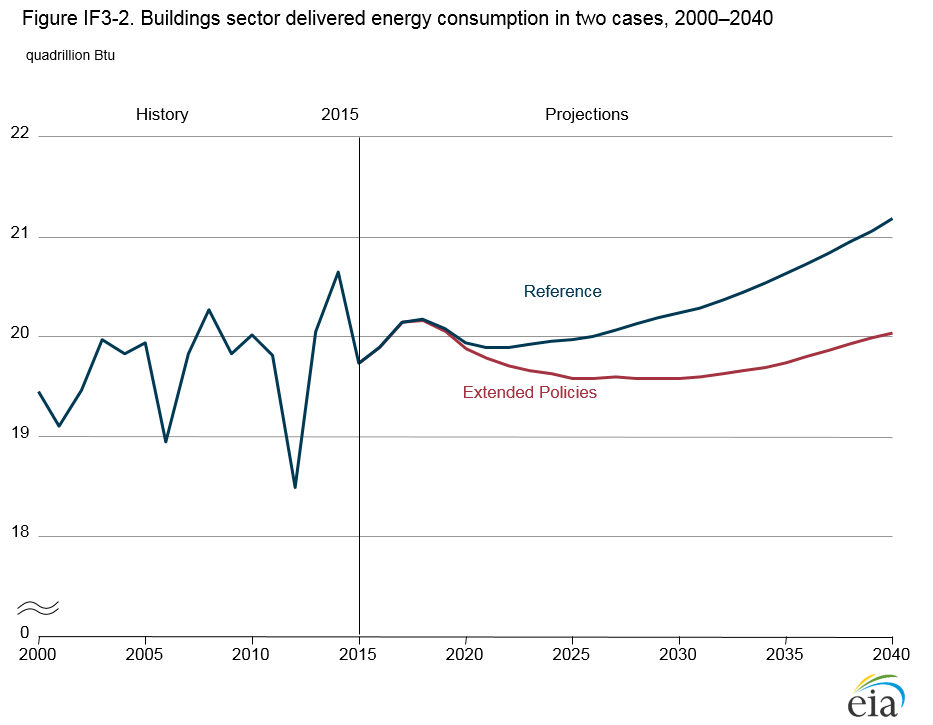
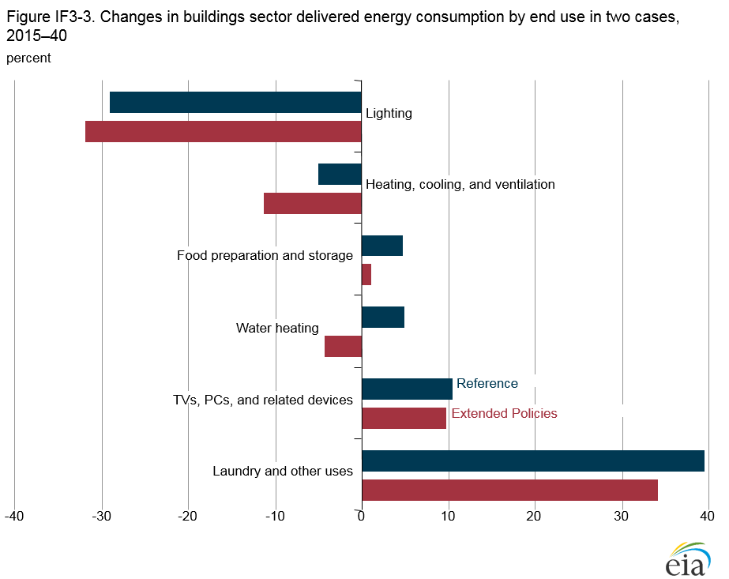
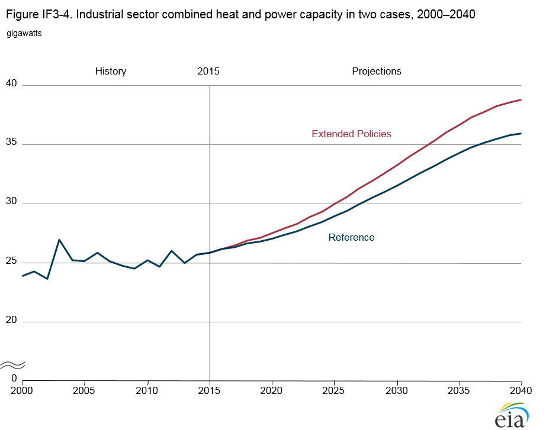
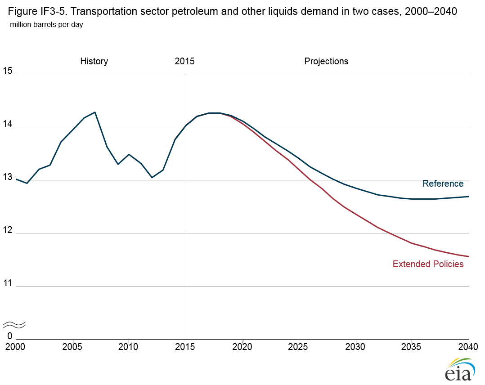
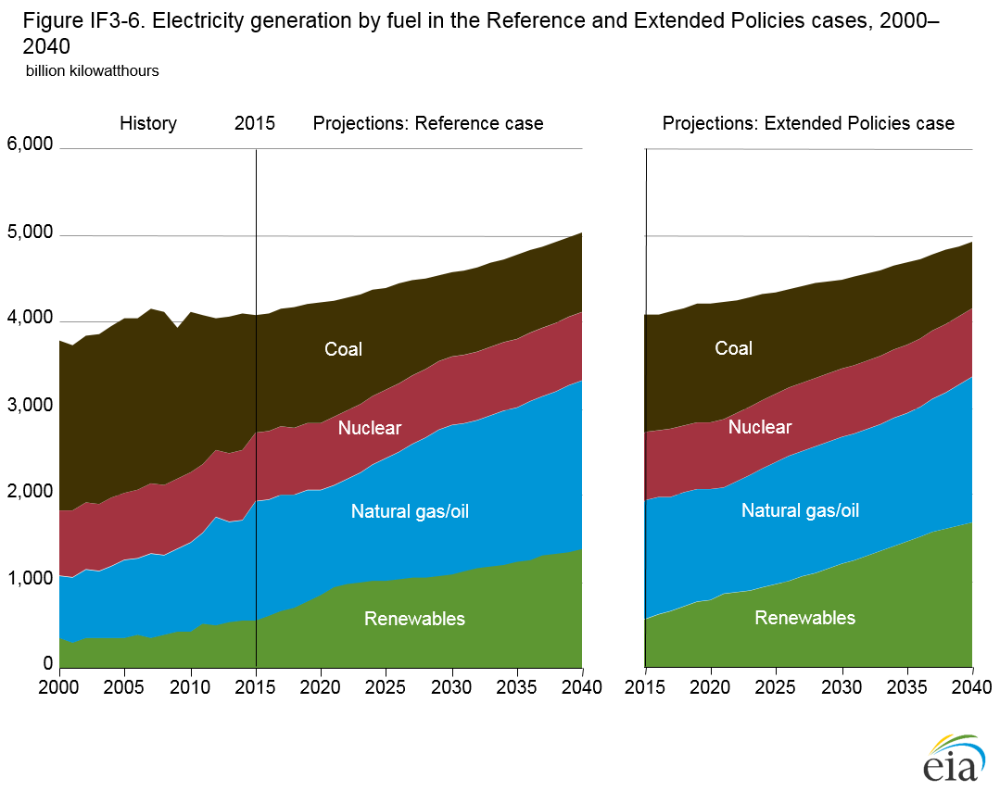
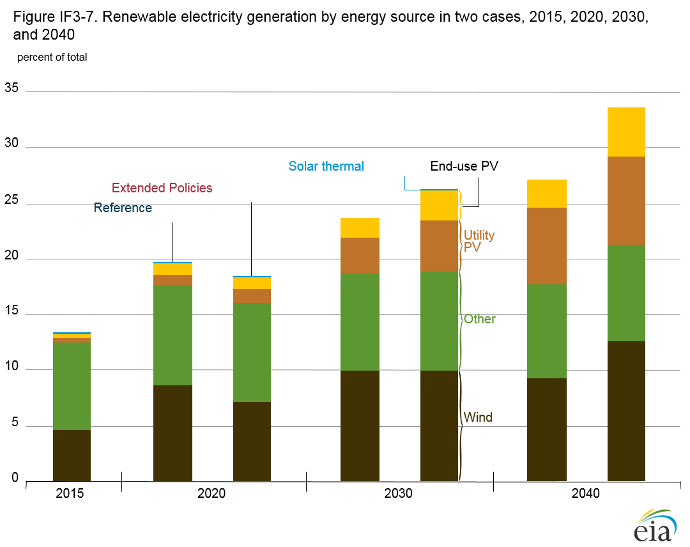
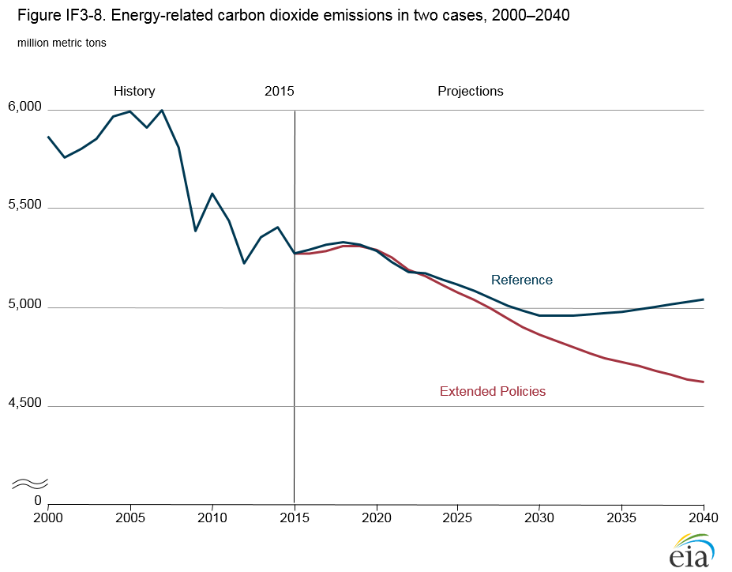
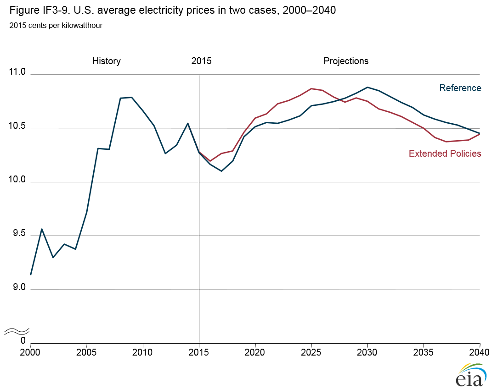

Extended Policies Case
Release Date: 6/27/16
The Annual Energy Outlook 2016 (AEO2016) Extended Policies case includes selected policies that go beyond current laws and regulations. Existing tax credits that have scheduled reductions and sunset dates are assumed to remain unchanged through 2040. Other efficiency policies, including corporate average fuel economy standards, appliance standards, and building codes, are expanded beyond current provisions; and the U.S. Environmental Protection Agency (EPA) Clean Power Plan (CPP) [1] regulations that reduce carbon dioxide emissions from electric power generation are tightened after 2030.
No attempt is made to cover the full range of possible uncertainties, and the policy assumptions used in the Extended Policies case should not be construed as a U.S. Energy Information Administration (EIA) opinion regarding how laws or regulations should, or are likely to, be changed. The Extended Policies case includes only federal laws and regulations and does not include state laws or regulations. In general, the Extended Polices case leads to lower estimates for overall delivered energy consumption, increased use of renewable fuels (particularly for electricity generation), reduced energy-related carbon dioxide (CO2) emissions, lower energy prices, and higher government tax expenditures.
Background
The AEO2016 Reference case is best described as a current laws and regulations case, because it generally assumes that existing laws and regulations remain unchanged throughout the projection period, except for those current laws or regulations that include sunset dates or specific changes over time. The Reference case serves as a starting point for analysis of proposed changes in legislation or regulations. The Extended Policies case assumes updates or extensions of current laws and regulations, including:
- Laws or regulations that have a history of being extended beyond their legislated sunset dates. Examples include the various tax credits for renewable fuels and technologies, which have been extended with or without modifications several times since their initial implementation.
- Laws or regulations that call for periodic updating of initial specifications. Examples include appliance efficiency standards issued by the U.S. Department of Energy (DOE) and Corporate Average Fuel Economy (CAFE) and greenhouse gas (GHG) emissions standards for vehicles issued by the National Highway Traffic Safety Administration (NHTSA) and EPA.
- Laws or regulations that allow or require regulatory agencies to issue new or revised regulations under certain conditions. Examples include many provisions of the Clean Air Act that require EPA to issue or revise regulations if it finds that an environmental quality goal is not being met.
Extended Policies case
The Extended Policies case adopts the following assumptions:
- Electricity generation technologies eligible for the Production Tax Credit (PTC) retain their full credit value through 2040, as opposed to declining in value starting in 2017 (wind) or expiring at the end of 2016 (other PTC-eligible technologies, including geothermal and hydroelectric).
- For solar power, the full Investment Tax Credit (ITC) value of 30% remains in effect through 2040 for the residential, commercial, and electric power sectors, whereas in the Reference case, the value of the ITC begins to decline in 2020.
- In the buildings sector, tax credits for the purchase of energy-efficient and renewable equipment are assumed to be extended indefinitely at their current levels. For the residential sector, the extensions include personal tax credits for solar photovoltaic (PV) installations, solar water heaters, small wind turbines, fuel cells, and geothermal heat pumps. For the commercial sector, the extensions include the business ITC for solar PV, solar water heaters, small wind turbines, fuel cells, microturbines, geothermal heat pumps, and conventional combined heat and power (CHP). The ITC for solar PV and solar water heaters is assumed to remain at 30%, rather than being phased out in 2022 (residential systems) or declining to 10% (commercial systems).
- Standards for residential and commercial equipment are assumed to be updated as prescribed by the timeline in the DOE multi-year plan, at levels based on ENERGY STAR™ specifications or on Federal Energy Management Program purchasing guidelines for federal agencies, as applicable. Standards also are updated for products that currently are not subject to federal efficiency standards but are covered by voluntary industry agreements or by prevailing state standards.
- Federal energy codes for residential and commercial buildings are assumed to be updated twice over the projection, with implementation beginning in 2025 and in 2034, each phased in over nine years. The updates provide additional improvements to new construction. The equipment standards and building codes assumed for the Extended Policies case are meant to illustrate the potential effects of those policies on energy consumption for buildings. No cost-benefit analysis or evaluation of impacts on consumer welfare was completed in developing the assumptions. Likewise, no technical feasibility analysis was conducted, although standards were not allowed to exceed the maximum technologically feasible levels described in DOE’s technical support documents.
- The Reference case and the Extended Policies case include the joint attribute-based CAFE and vehicle greenhouse gas (GHG) emissions standards for model years (MY) 2012 to 2025 for light-duty vehicles (LDV). In the Reference case, the CAFE standards are assumed to remain constant at MY 2025 levels in subsequent model years, although the fuel economy of new LDVs continues to rise modestly over time. The Extended Policies case assumes continued increases in CAFE standards at an annual average rate of 1.4% for new LDVs after MY 2025.
- The Reference case and the Extended Policies case include the medium-duty vehicle (MDV) and heavy-duty vehicle (HDV) fuel consumption and GHG emissions standards for MY 2014 to MY 2018. In the Reference case, the standards are held constant at MY 2018 levels in subsequent model years, although the fuel economy of HDVs continues to rise modestly. The Extended Policies case includes tighter standards for fuel consumption and GHG emissions for MDVs and HDVs, as proposed in the Phase 2 standards jointly issued by EPA and NHTSA in July 2015 [2].
- The Reference case includes the CPP, which under current regulations is phased in over the 2022–30 period, and assumes that states comply by setting mass-based compliance strategies that cover both existing and new electric generators. The Extended Policies case assumes a further reduction in the CO2 targets after 2030. The mass-based limits, which in the Reference case result in power sector CO2 emissions that in 2030 are about 35% below 2005 levels, are assumed to continue to decline linearly to 45% below 2005 emission levels in 2040 in the Extended Policies case.
- In the industrial sector, the 10% ITC for combined heat and power (CHP), which in the Reference case ends in 2016 [3], continues through 2040. Also, the ITC is modified to increase the size limit for eligible CHP units from 15 megawatts (MW) to 25 MW. The ITC for CHP is extended to cover all properties with CHP, no matter the powerplant size, instead of being limited to properties with plants smaller than 50 MW as in the Reference case [4]. These extensions are consistent with previously proposed legislation.
Analysis Results
In general, estimates for overall delivered energy consumption are lower in the Extended Policies case than in the Reference case, with renewable fuels providing an increasing share of U.S. electricity generation and total energy-related CO2 emissions declining. Average electricity prices are marginally affected, leading to small declines in 2040 relative to the Reference case. Energy expenditures are lower in the Extended Policies case than in the Reference case, because the assumed tax credits and efficiency standards lead to lower energy demand. Appliance purchase costs also are affected, and government tax expenditures generally are higher as consumers and businesses take advantage of the tax credits.
Energy consumption
Total energy consumption in the Extended Policies case is lower than in the AEO2016 Reference case throughout the projection period (Figure IF3-1) as a result of improvements in energy efficiency. In 2040, total energy consumption in the Extended Policies case is 4% lower than in the Reference case, as the combination of the extension of tax credits and other policies reduces overall demand even after taking price declines into account.

figure data
Buildings sector energy consumption
In the Extended Policies case, delivered energy consumption in the buildings sector falls below its 2015 level from 2022 to 2034 (Figure IF3-2), with renewable distributed generation (DG) technologies (PV systems and small wind turbines) providing much of the energy savings. With the continuation of tax credits spurring wider adoption of DG systems, onsite electricity generation from renewable DG increases to 90 billion kilowatthours (kWh) in 2025, compared with 61 billion kWh in the Reference case. In 2040, onsite electricity generation from renewable sources totals 249 billion kWh in the Extended Policies case—nearly double the Reference case total.

figure data
Efficiency gains from assumed future standards and more stringent building codes further reduce delivered energy use in the buildings sectors in the Extended Policies case. Including savings from distributed generation, delivered energy use in the buildings sector in the Extended Policies case is 1.9%, or 0.4 quadrillion British thermal units (Btu), lower than in the Reference case in 2025 and 5.4%, or 1.1 quadrillion Btu, lower than in the Reference case in 2040.
Among delivered energy sources, electricity is the buildings fuel source most affected in the Extended Policies case. Efficiency standards and buildings codes affect appliances that run on all fuels, but distributed generation has a larger impact on electricity purchases than other fuel purchases. In comparison with the Reference case, building sector electricity purchases are 2.6% lower in the Extended Policies case in 2025 and 7.4% lower in 2040, and natural gas and distillate fuel oil purchases are 3.7% and 1.6% lower, respectively, in 2040.
Energy consumption levels for all end uses are lower in the Extended Policies case than in the Reference case (Figure IF3-3), with space heating, cooling, and ventilation accounting for almost 50% of the reduction. Delivered energy consumption continues to grow for many end uses in the buildings sector, as commercial floorspace and the number of households continue to expand. In particular, energy consumption for laundry and other uses, which includes small devices and other miscellaneous uses that typically are not covered by efficiency standards.

figure data
Industrial sector energy consumption
In the industrial sector, the 10% ITC for CHP is extended to 2040 in the Extended Policies case, the maximum size of individual generating units eligible for the ITC is increased from 15 MW to 25 MW, and there is no ITC cap on total plant size (compared with a cap of 50 MW in the Reference case). Although most CHP units are smaller than 15 MW, approximately 15% of operable industrial CHP units as of 2014 were between 15 MW (the unit size cap in the Reference case) and 25 MW (the unit size cap in the Extended Policies case). In addition to the tax credit extension, the higher size cap also has an effect, given that 30% of operable CHP plants in 2014 exceeded the Reference case cap of 50 MW [5]. In 2040, industrial CHP capacity is 8% higher in the Extended Policies case than in the Reference case (Figure IF3-4), and delivered energy intensity is slightly lower.

figure data
Transportation sector energy consumption
The Extended Policies case differs from the AEO2016 Reference case in assuming that the joint CAFE and GHG emissions standards promulgated by EPA and NHTSA for MY 2012–25 are extended through 2040 with an average annual increase of 1.4%. Sales of LDVs that do not rely solely on gasoline internal combustion engines for power (including those that use diesel, alternative fuels, or hybrid electric systems) play a substantial role in meeting the higher fuel economy standards after 2025, growing to 80% of new LDV sales in the Extended Policies case, compared with 61% in the Reference case, in 2040.
In the Reference case, LDV energy consumption declines from 15.9 quadrillion Btu, or 8.6 million barrels per day (b/d) oil equivalent, in 2015 to 14.1 quadrillion Btu (7.7 million b/d oil equivalent) in 2025 as a result of more stringent CAFE standards. Extension of the CAFE standards in the Extended Policies case further reduces LDV energy consumption, to 11.0 quadrillion Btu (6.0 million b/d oil equivalent) in 2040, or 7% lower than in the Reference case.
The Extended Policies case includes the proposed Phase 2 standards for MDVs and HDVs. The average fuel economy of new MDVs and HDVs increases from a combined 7.4 miles per gallon (mpg) in 2017 to 10.8 mpg in 2040 in the Extended Policies case. MDV and HDV annual energy consumption falls from 5.6 quadrillion Btu (2.7 million b/d oil equivalent) in 2015 to 5.4 quadrillion Btu (2.6 million b/d oil equivalent) in 2040 in the Extended Policies case. In 2040, MDV and HDV fuel consumption is 1.6 quadrillion Btu (0.8 million b/d oil equivalent), or 23%, lower than in the Reference case. Consumption of petroleum and other liquids in the transportation sector declines in the Extended Policies case from 14.3 million b/d oil equivalent in 2017 to 11.6 million b/d oil equivalent in 2040, compared with 12.7 million b/d oil equivalent in 2040 in the Reference case (Figure IF3-5).

figure data
Electricity generation
The Extended Policies case assumes that the value of the tax credits for eligible renewable electricity generation sources as of 2016 is extended through 2040, and that the stringency of the CPP increases from 2030–40, requiring emissions in 2040 to be 45% below the 2005 total. As a result, coal-fired generation declines to 779 billion kWh in 2040 in the Extended Policies case, compared with 919 billion kWh in the Reference case (Figure IF3-6). Generation from oil and natural gas in 2040 also is lower in the Extended Policies case, at 1,686 billion kWh, compared with 1,952 billion kWh in the Reference case. Generation from renewable technologies in 2040 is higher in the Extended Policies case, at 1,663 billion kWh, than in the Reference case (1,374 billion kWh), and nuclear power generation is virtually the same in the two cases.

figure data
The Extended Policies case includes energy efficiency measures that result in slower load growth and lower demand for new generating capacity. Because of those measures, differences in renewable technology trends between the Extended Policies case and the Reference case can be seen in the mix of energy sources for electricity generation. As a result of the PTC extension for wind energy in the Extended Policies case, the share of electricity generation from wind resources declines from Reference case levels in the near term. Wind projects built in anticipation of expiring tax credits in the Reference case are built later in the projection period in the Extended Policies case, at a time when electricity demand and economic conditions are more favorable. In 2040, the share of electricity generation from wind energy resources is larger in the Extended Policies case than in the Reference case (Figure IF3-7).

figure data
In the Extended Policies case, the share of total electricity generation from wind resources more than doubles, from 5% in 2015 to 13% in 2040, as compared with 9% in 2040 in the Reference case. In the Extended Policies case, extension of the PTC through 2040 makes wind projects more attractive throughout the projection. In the Reference case, the value of the PTC starts to decline in 2017 and expires in 2020, and as a result, more wind capacity is added earlier in the projection period. In the Extended Policies case, more capacity is added after 2020, and more electricity is generated from wind installations, than in the Reference case.
The solar ITC for utility-scale projects in the Reference case decreases gradually from 30% in 2019 to 10% by 2022. In the Extended Policies case, the value of the ITC remains at 30% through 2040, and as a result, the share of total electricity generation from utility-scale solar PV increases from 0.5% in 2015 to 8.0% in 2040, compared with 6.8% in 2040 in the Reference case.
While tax credits for residential projects expire in the Reference case, and those for commercial projects decline to 10% starting in 2022, the solar ITC continues through 2040 in the Extended Policies case. As a result, electricity generation from solar PV in the end-use sector grows more rapidly in the Extended Policies case than in the Reference case, by an average of 10.6%/year from 2015 to 2040, compared with 8.4%/year in the Reference case—as a result of the extension of the solar ITC through 2040 in the Extended Policies case, while tax credits for residential projects expire and those for commercial projects decline to 10% starting in 2022 in the Reference case. The effects of tax credit extensions on other eligible renewable generation technologies, including hydropower, biomass, and geothermal, are minimal in comparison.
Energy-related CO2 emissions
In the Extended Policies case, lower overall demand for fossil energy results in lower energy-related CO2 emissions than in the Reference case (Figure IF3-8). From 2015 to 2040, energy-related CO2 emissions are reduced by a cumulative total of 3.2 billion metric tons (or 2.4%) in the Extended Policies case compared with the Reference case. Electric power sector emissions also differ significantly between the two cases after 2030, reflecting the impact of more stringent CPP requirements over the 2030–40 period. With the CPP becoming more stringent after 2030, cumulative power sector CO2 emissions are reduced by 1.3 billion metric tons (or 3.0%) from 2015 to 2040 in the Extended Policies case compared with the Reference case. The increase in fuel economy standards for new LDVs, MDVs, and HDVs in the Extended Policies case accounts for 50% of the total cumulative reduction in CO2 emissions from 2015 to 2040 in comparison with the Reference case. The rest of the increase results from greater improvement in appliance efficiencies and increased penetration of renewable electricity generation.

figure data
Because the effects of the Extended Policies case on energy use and CO2 emissions increase over time, the maximum percentage difference in projected emissions between the Reference case and the Extended Policies case occurs in 2040 (8.4% lower in the Extended Policies case than in the Reference case). In the Extended Policies case, space cooling, water heating, and small devices and miscellaneous end uses together account for most of the emissions reductions from Reference case levels in the buildings sector, and lower petroleum use accounts for most of the emissions reductions in the industrial sector.
Energy prices and tax credit payments
Average electricity prices in both the Reference case and Extended Policies case remain in a relatively tight range between 10.1 cents/kWh and 10.9 cents/kWh (2015 dollars) through 2040 (Figure IF3-9). Electricity prices in the near term are higher in the Extended Policies case than in the Reference case. With the certainty of continued tax credits in the Extended Policies case, renewable capacity—particularly wind—is added later than in the Reference case, resulting in more electricity generation from natural gas, which increases fuel costs and electricity prices. As more renewable capacity is added later in the Extended Policies case, electric power sector fuel costs decline, leading to lower electricity prices. Increased energy efficiency expenditures in the Extended Policies case bring electricity prices back to levels close to those in the Reference case in 2040.

figure data
The reductions in delivered energy consumption and CO2 emissions in the Extended Policies case are accompanied by higher equipment costs for consumers and increased tax expenditures that reduce tax revenue for the U.S. government. In comparison with the AEO2016 Reference case, residential and commercial consumers in the Extended Policies case pay an extra $15.6 billion/year (2015 dollars) on average from 2015 to 2040 for end-use equipment, residential building shell improvements, and additional distributed generation systems. The government pays an extra $7.3 billion/year on average in tax credits to consumers (or, from the government’s perspective, net revenues are reduced by that amount) in the buildings sector. The additional investments by consumers in the Extended Policies case are offset, however, by savings on energy purchases as a result of efficiency improvements and increases in distributed generation. Compared with the Reference case, consumers in the residential and commercial sectors save an average of $14.9 billion (2015 dollars) in annual energy costs from 2015 to 2040 in the Extended Policies case.
In the electric power sector, the extension of the PTC in the Extended Policies case increases government tax expenditures by approximately $4.1 billion/year from 2015 to 2040, compared with $2.0 billion/year in the Reference case. Most of the change in tax expenditures between the two cases is attributable to additional generation from wind energy. Over the 2015–40 period, the ITC increases government tax expenditures in the electric power sector by approximately $3.6 billion/year in the Extended Policies case, compared with $1.6 billion/year in the Reference case, primarily as a result of additional credits for utility-scale PV in the Extended Policies case. For all sectors combined, tax credit extensions in the Extended Policies case over the 2015–40 period have an average aggregate value of $16.4 billion/year, or more than three times the average of $5.1 billion/year in the Reference case.
Endnotes
- U.S. Environmental Protection Agency, “Standards of Performance for Greenhouse Gas Emissions From New, Modified, and Reconstructed Stationary Sources: Electric Utility Generating Units” (Washington, DC: October 23, 2015), https://www.federalregister.gov/articles/2015/10/23/2015-22837/standards-of-performance-for-greenhouse-gas-emissions-from-new-modified-and-reconstructed-stationary; and U.S. Environmental Protection Agency, “Carbon Pollution Emission Guidelines for Existing Stationary Sources: Electric Utility Generating Units” (Washington, DC: October 23, 2015), https://www.federalregister.gov/articles/2015/10/23/2015-22842/carbon-pollution-emission-guidelines-for-existing-stationary-sources-electric-utility-generating.
- U.S. Environmental Protection Agency and National Highway Traffic Safety Administration, “Greenhouse Gas Emissions and Fuel Efficiency Standards for Medium- and Heavy-Duty Engines and Vehicles – Phase 2” (Washington, DC: June 19, 2015), http://www.nhtsa.gov/fuel-economy.
- United States Internal Revenue Code, Title 26, Subtitle A—Income Taxes, §48(a)(2)(A)(ii), https://www.gpo.gov/fdsys/pkg/USCODE-2011-title26/pdf/USCODE-2011-title26-subtitleA-chap1-subchapA-partIV-subpartE-sec48.pdf.
- United States Internal Revenue Code, Title 26, Subtitle A—Income Taxes, §48(c)(3)(B)(iii), https://www.gpo.gov/fdsys/pkg/USCODE-2011-title26/pdf/USCODE-2011-title26-subtitleA-chap1-subchapA-partIV-subpartE-sec48.pdf.
- U.S. Energy Information Administration, Form 860, 2014 data (Washington, DC: October 21, 2015; corrected February 21, 2016): https://www.eia.gov/electricity/data/eia860/.